ROBOTICS · DESIGN LEAD
September 2021 – Present
FRC Robotics Competition.
Design Lead · Team 2220 Blue Twilight
A competition robot starts as a game challenge and a blank CAD workspace. I lead the student design team that turns those into an assembly ready for the field.
What the work
looked like.
I started FIRST Robotics Competition (FRC) with Team 2220 in 2021. In my first seasons, I focused on mechanical work while helping with outreach. I later became Design Lead; I am entering my third year in the position. After my first year as Design Lead, I also took on an outreach leadership position. I now lead a CAD team of four or more students through a four-week robot production cycle.
Across recent seasons, the team earned the Judges’ Award in 2024; the Team Sustainability Award at Rocket City and Team Spirit Award at Minnesota 10,000 Lakes in 2025; then the Regional Engineering Inspiration Award at Minnesota Bluff Country and the Industrial Design Award at City of Fountains in 2026. I contributed to the design and team work behind these results. Our team also qualified for the 2026 FIRST Championship. See Team 2220’s award history on The Blue Alliance ↗
After Week 1 at the Minnesota Bluff Country Regional, testing showed that our robot could catch on the Bump and that the intake kicker bar could hang on retraction, costing us time. After sitting down as a team to review what was happening, we decided on a mid-season rebuild. The rebuild made under-trench traversal a priority while keeping our fast-shooting hopper strategy. Afterward, our scoring rate improved from 19.5 to 23 balls per second.
For the 2026 season, I designed intakes for two competition robots: 26A at the Minnesota Bluff Country Regional and 26B at the City of Fountains Regional. I used a 9-tooth spur gear on 26A. On 26B, an 11-tooth live spur gear drove a 35-tooth rack limited to 32 teeth, with a 34:1 reduction and a 750-millisecond deployment target. My 26B intake moved from three rollers to a custom 2-inch, 30-tooth roller. Its extension uses paired rack-and-pinion drives; the kicker bar sits outside the intake to clear more reliably on retraction. I also made both robots’ bumpers and the six-panel 26B hopper wall, which nests inside the frame when retracted and expands with the intake for roughly 50-ball capacity. I guided another student through the 26B floor design. I completed roughly 80% of each competition’s technical binder, documenting design decisions and robot development. Across my broader FRC work, I have modeled 639+ parts, including 320+ custom designs.
Top skills utilized
- Mechanical design
- Onshape CAD
- Mechanism development
- Technical documentation
26B
A mechanism
in motion.
This animated mechanism study shows the rack sliding through a fixed pinion as the carriage follows. The swing arm can track the rack or move independently.
The slider moves the rack and carriage through the mechanism. Turn off “Arm follows the bar” to control the swing arm separately. View the actual CAD on Onshape ↗
Scenes from
the process.
Competition snapshots, collaboration across teams, and close-ups of the intake design work.

BIOCORE
2026–2027 · Kickoff January 9, 2027
MY ROLE Design Lead
BIOCORE
2026–2027 · Kickoff January 9, 2027
MY ROLE Design Lead
The season is coming up. No photos yet.

REBUILT
2025–2026 · January 10, 2026 – May 2, 2026
MY ROLE Design Lead
REBUILT
2025–2026 · January 10, 2026 – May 2, 2026
MY ROLE Design Lead
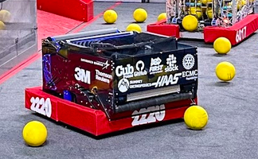

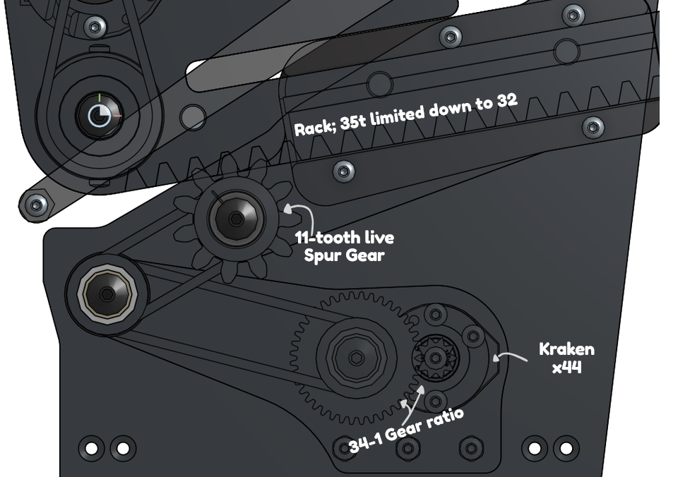
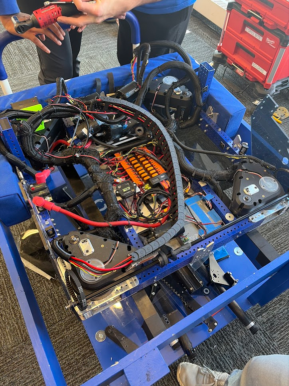

REEFSCAPE
2024–2025 · January 4, 2025 – April 19, 2025
MY ROLE Design Lead
REEFSCAPE
2024–2025 · January 4, 2025 – April 19, 2025
MY ROLE Design Lead
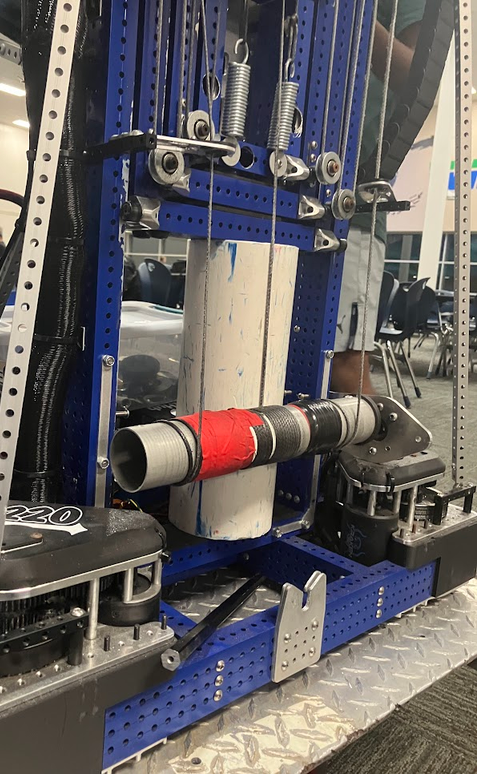
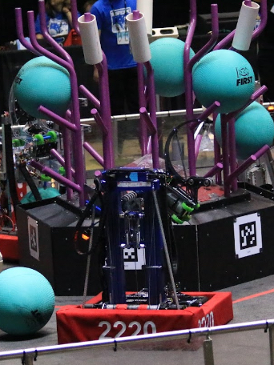
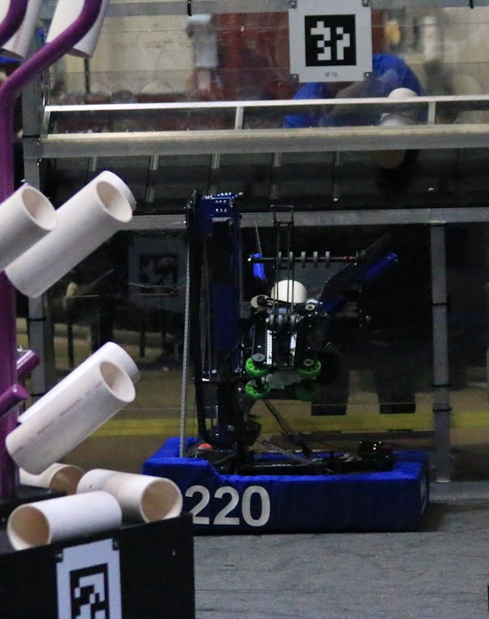
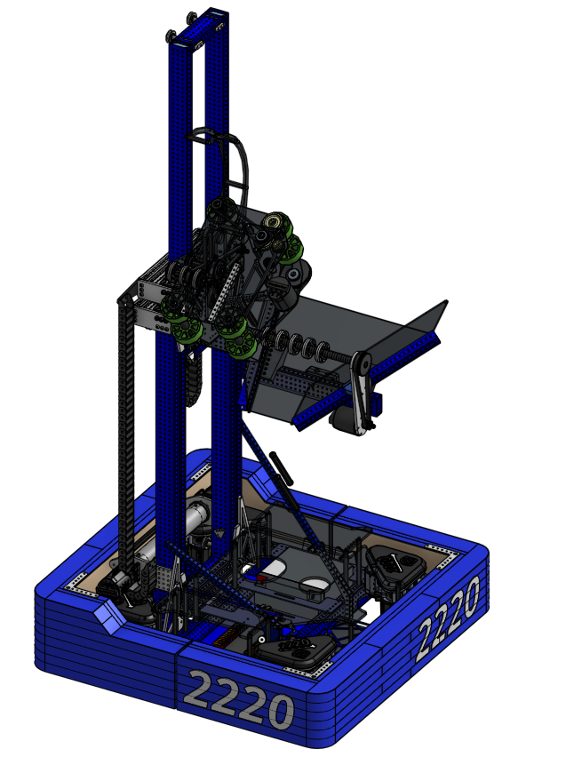

CRESCENDO
2023–2024 · January 6, 2024 – April 20, 2024
CRESCENDO
2023–2024 · January 6, 2024 – April 20, 2024
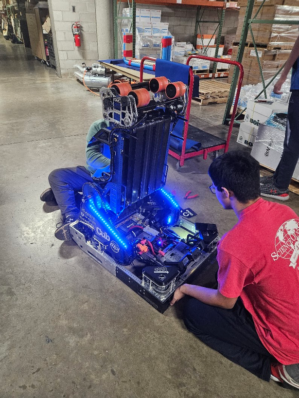
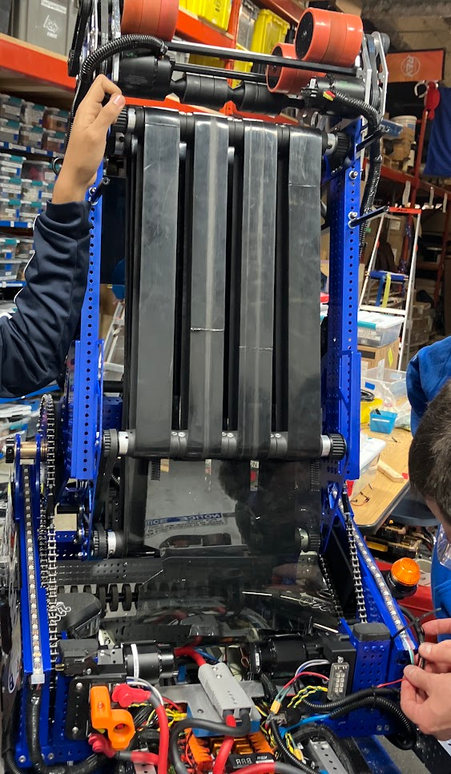
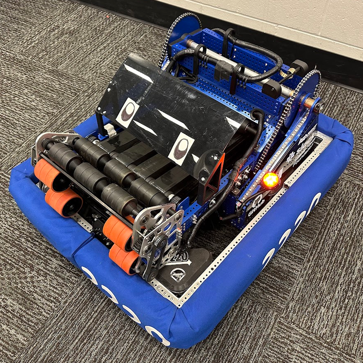
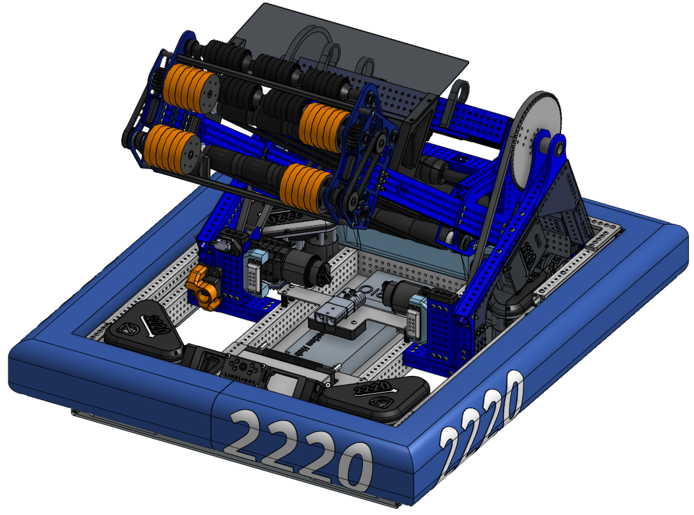

CHARGED UP
2022–2023 · January 7, 2023 – April 22, 2023
CHARGED UP
2022–2023 · January 7, 2023 – April 22, 2023
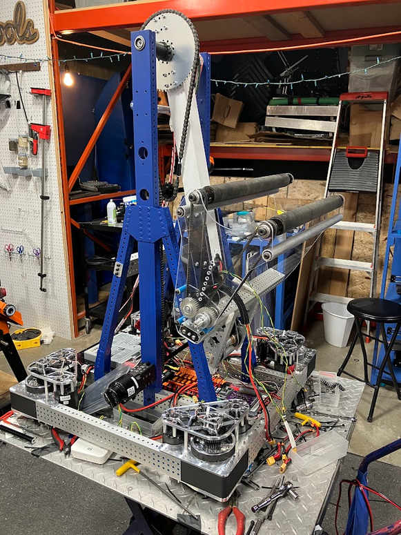
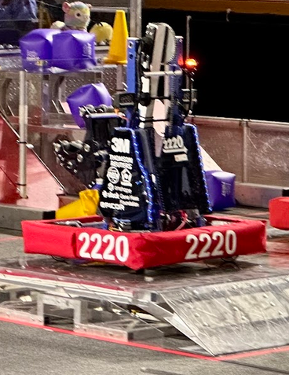

RAPID REACT
2021–2022 · January 8, 2022 – April 23, 2022
RAPID REACT
2021–2022 · January 8, 2022 – April 23, 2022
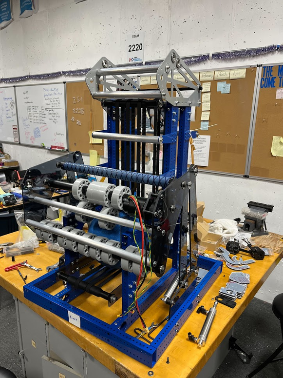
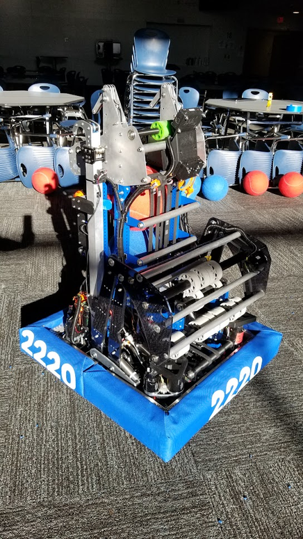